5 Vorbereitung Erhebungsteile / Preparation Study Parts
Assessments that are administered with the IRTlib software consist of so-called survey parts.After configuring a study, at least one survey part must be created.
5.1 Survey part administration
After creating a study, the next step in preparing a test evaluation is to add a new survey part in the Survey parts view:
The created survey parts appear as cards in the Survey parts view. If studies consist of several survey parts, the order of the survey parts can be adjusted in the Survey parts / Overview view for linear processes. If survey parts are to be controlled depending on variables (e.g. passed preload variables or other blockly variables), routing between survey parts can be configured as an alternative.
Detailed instructions for creating survey parts can be found here in the embedded help:
5.1.1 Create survey part
The IRTLib Editor is used to create configurations for studies, which can then be used in an IRTLib Player to carry out computer-based assessments. Studies consist of one or more assessment parts.
5.1.1.1 How does it work?
Once a study has been created, a survey section can now be added via the plus icon at the bottom right:

Then enter a name and optionally a description in the Create new survey part dialog.
Make sure that only letters (upper and lower case), numbers and a _ are allowed for the Name.
Then click on Save.

If required, you can also assign an image to a survey part using the following icon. This image is used in the IRTLib Editor for this survey part:

5.1.1.2 Edit survey part
Created survey parts are displayed as tiles in the survey part overview:
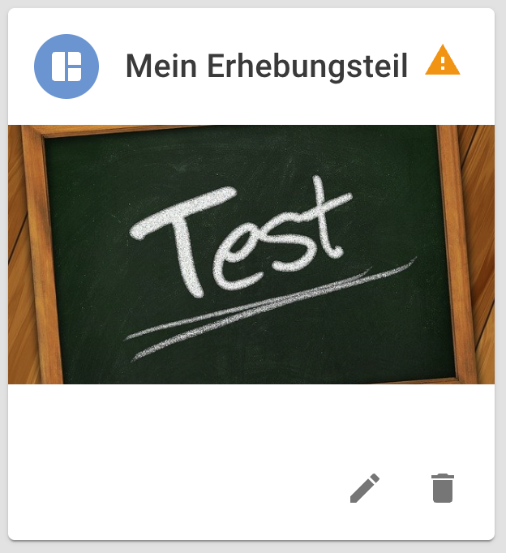
- To continue with the configuration of a survey part, click on the small edit icon:

Delete survey section: You can also use the recycle bin icon to delete survey parts. The deletion of survey parts cannot be undone:

5.1.1.3 Sort survey parts
If the option Enable routing for survey parts is not selected in the Info view (section Overview) in the configuration of a Study, then Survey parts are administered in the order in which they are displayed in the survey part administration.
- Move survey parts**: To change the order of survey parts using drag-and-drop, the Change order mode must first be activated using the following toggle icon:

The tiles can then be put in the desired order. The Change order mode is ended when the floppy disk icon is clicked or the changes are discarded:

The order of study parts can be changed in the study parts view:
Before adding or selecting CBA ItemBuilder projects, as described in the section Assessment contents (items), selected items can be configured in the Info view.
A detailed description can be found here in the embedded help:
5.2 Study-Part Configuration
Adding and managing CBA ItemBuilder projects within the IRTlib Editor is done in the Items section.
For the administration of time-limited survey parts, a time limit can be defined under processing-time. If the option Limit processing time is activated, one or more tasks can be defined, which are displayed in the event of a timeout. In addition, content can be defined in the pre-item(s) and post-item(s) section, which is administered before or after the time-limited part.
5.3 Insert assessment content (items)
The contents that are to be used in a survey section of type CBA ItemBuilder are transferred to the configuration via the IRTlib Editor, i.e. the configuration created with the IRTlib Editor also contains the CBA ItemBuilder Project Files. The Items view is available for adding or updating CBA ItemBuilder projects.
A detailed description can be found here in the embedded help:
5.3.1 Configure items
5.3.1.1 Basic functions
Import CBA ItemBuilder project files:The IRTlib Editor maintains a list of known items to which CBA ItemBuilder project files that are not yet known can be added. To add a project file, first open the List of known items with the + symbol and then select the Import button.

Update already imported CBA ItemBuilder project files: If a CBA ItemBuilder project file is already included in the List of Known Items, the project files can be updated. They are then not added to the List of known items, but the existing CBA ItemBuilder project file is stored in a newer version. To update an item, it must first be selected in the list of items in a survey section.This activates the update symbol. In the Update item dialog that then opens, an updated version of a CBA ItemBuilder project file can be added using the Import button.
- Preview of CBA ItemBuilder project files:Items added in a survey section can be viewed directly in the IRTlib Editor in a built-in preview function. To view an item, it must first be selected in the list of items in a survey part.The Preview can then be called up via the eye symbol:

- Exporting CBA ItemBuilder project files: CBA ItemBuilder project files that have been imported into the IRTlib Editor can be exported for further editing with the CBA ItemBuilder. To export a selected item from the list of items of a survey part, the download icon can be called up:

Deletion of CBA ItemBuilder project files: The items inserted in survey parts can be deleted from a survey part.The delete symbol removes the item from a survey part, but it remains in the list of known items:
 > Note: It is not yet possible to delete CBA ItemBuilder project files from the List of known items. This functionality is not necessary because CBA ItemBuilder project files are only included in the configuration of a study by the IRTlib Editor if tasks from a CBA ItemBuilder project file are used in a survey section.
> Note: It is not yet possible to delete CBA ItemBuilder project files from the List of known items. This functionality is not necessary because CBA ItemBuilder project files are only included in the configuration of a study by the IRTlib Editor if tasks from a CBA ItemBuilder project file are used in a survey section.
5.3.1.2 Sorting items (linear process)
- Sorting CBA ItemBuilder project files**:If the option Enable routing is not selected for a Survey part, then the order can be adjusted in the list of items using the following button:

The items are then administered exactly as they appear for a survey part in this list.
Note: Changes to the Items view must be saved using the diskette icon or discarded using the undo icon:

5.4 Processing time
If the administration of a linear sequence of CBA ItemBuilder tasks is to be administered with a limited processing time, this can be implemented by defining a maximum processing time (in seconds). If, for example, a test content is to be administered for a maximum of 28 minutes, a time of 1680 seconds is defined as the processing time. The message that is to be displayed when the processing time expires can be defined as one (or more) CBA ItemBuilder tasks.
A detailed description can be found here in the embedded help:
5.4.1 Define time limit
Survey parts without routing can easily contain a time-limited section. To do this, the option Limit processing time is activated in the Processing time view and a time limit in seconds (>0) is entered.
Four groups of CBA ItemBuilder tasks are distinguished for a time limit, which are defined in different places in the IRTlib Editor.The items for which the time limit is to apply are defined in the Items view (analogous to non-time-limited survey parts):
- Items: Items that are displayed until the time limit has been reached.
In the Processing time view, the following can also be defined:
- Timeout items:Items that are only displayed if the time-limited items have not been completed within the limited processing time.
Finally, the following tasks can be defined as individual views of the configuration of survey items:
- Lead items:Items that are displayed before the time-limited section. Follow-up items: Items that are displayed after the time-limited section.
The icons for the following operations are available in all of the above dialogs:
- Add:
- Refresh:
- Preview:

- Download/Export:

- Delete:

- Sort:

Note: More complex designs with possibly several timers can be implemented with the IRTlib Editor if the option Enable routing is activated in the overview view for a Survey part.
Note: Changes to the Editing time view must be saved using the diskette symbol or discarded using the undo symbol:

A central concept for the implementation of time limits in the IRTlib software is the separation of time-limited items and additional assessment content that is administered before or after the time-limited part.
- Items administered after a potentially time-limited section of an assessment are referred to as post-items.
5.4.2 Items according to a time limit
The Survey section allows the definition of items in different sections.Items in this section epilog-item(s) are displayed after the items defined in the items section of a survey part. The separation into epilog-item(s) and items is particularly useful if a time limit is activated under Editing time.
The following options are available for configuring items in the Follow-up item(s) section:
- Add:
- Refresh:
- Preview:
- Download/Export:
- Delete:
- Sort:
Note: Changes to the epilog-item(s) view must be saved using the floppy disk symbol or discarded using the undo symbol:
- Items that are administered before a potentially time-limited section of a survey part are called prefix items.
5.4.3 Items before a time limit
The Survey parts allow the definition of items in different sections. Items in this section Prefix item(s) are displayed before the items defined in the Items section of a Survey part. The separation into Foreword item(s) and Items is particularly useful if a time limit is activated under Editing time.
The following options are available for configuring items in the Foreword item(s) section:
- Add:
- Refresh:
- Preview:
- Download/Export:
- Delete:
- Sort:
Note: Changes to the Screenshot-item(s) view must be saved using the diskette icon or discarded using the undo icon:
5.5 Variables
This function is currently under development.
(This functionality is still under development).
5.6 Codebook
This function is currently under development.
(This functionality is still under development).
5.7 ItemPool
This function is currently under development.
(This functionality is still under development).
5.8 Routing within survey parts
If CBA ItemBuilder tasks are not to be administered in a linear sequence that is fixed in advance and identical for all test subjects, then the Routing function of the IRTlib software can be used.
A detailed description of Routing within survey parts can be found here in the embedded help:
5.8.1 Summary of routing within survey parts
The sequence of CBA ItemBuilder tasks can be defined here using Blockly (i.e. a form of visual programming). Blockly-based sequencing is available if the option Enable routing is selected for a survey part. The option can be found in the Info section of a survey part. If it is activated, the survey part contains the entry Routing.
Overview:
- Examples: linear sequence, simple test booklets, sequence with time restriction and booklet designs
- Quick guide: General notes on the Blockly editor
- Basics: Using the Blockly editor
- Displaying items or item lists
- Definition of time limits
- Changes to the test administrator menu
- Deepening: Advanced Blockly use
- Flow control with conditions
- Flow control with loops
- Operators for numbers, text, times and lists.
- More in-depth information on Blockly-variables and Blockly-functions
- Use of item results in the flow definition
- Blockly operators for encoding missing values and for writing data
- commenting on Blockly code
- Customization of the presentation of Blockly code
5.8.1.1 Examples
The basic idea of using Blockly for the definition of processes in computer-based assessments will first be illustrated with a few examples.
- Example for linear sequence
Based on the CBA ItemBuilder Tasks added to a survey part in the Items view, a linear sequence of Tasks corresponds to the following Blockly definition:
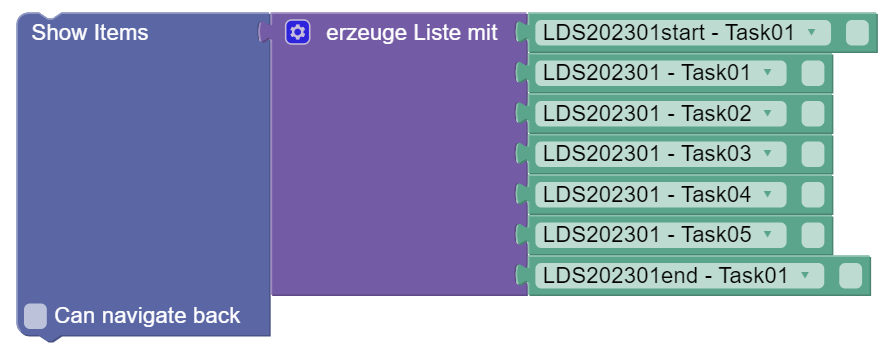
A list of CBA ItemBuilder Tasks is passed to the Blockly element Show Items, which is created with the operator create list with. The list is processed in the order shown, whereby each CBA ItemBuilder Tasks is displayed until the
NEXT_TASK- Command is executed.
An equivalent formulation of a linear sequence can also be made with several Show Items gaps if no back navigation is necessary:

- Example for simple test booklets
With the help of an variable (here: booklet) and a simple if/make-condition, you can now define a process that administers different items depending on the value of the variable:

The items for start and end are always administered, tasks 1-3 only if the variable Booklet has the value 0, tasks 4 and 5 if the variable Booklet has a value other than 0.
Alternatively, the identical sequence can also be created using the Blockly operator for displaying item lists:
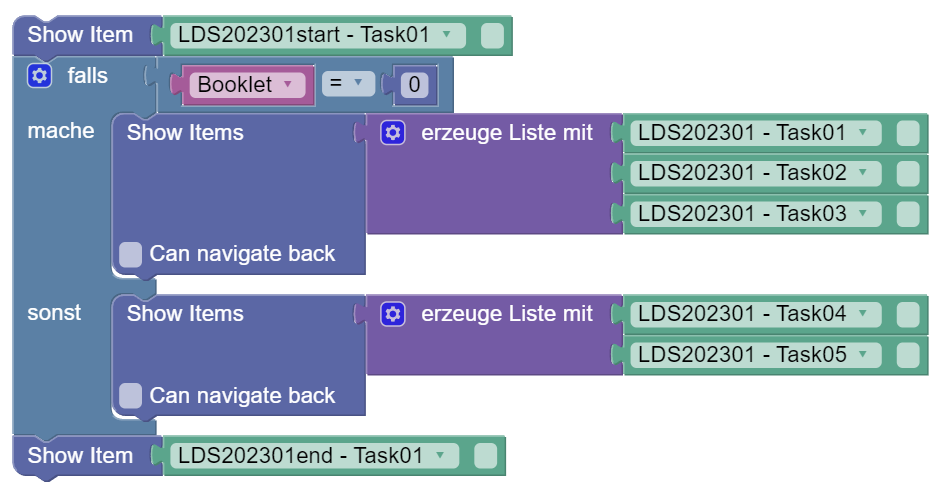
Both variants are completely equivalent in terms of functionality, but the second approach with lists allows the use of the back navigation option within the booklet-specific tasks.
- Example for process with time limit
The following Blockly component can be used to implement time-limited sections within a survey section using the Blockly configuration:
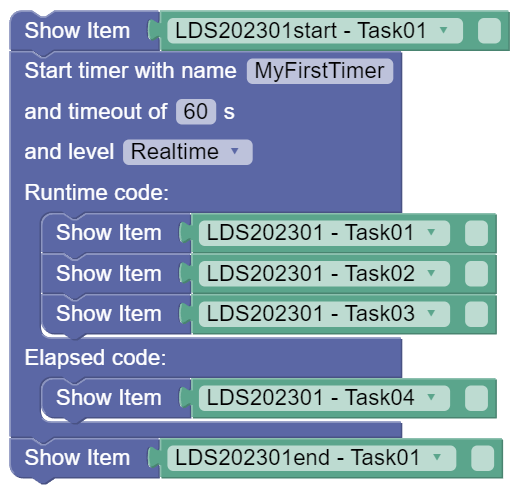
Each sequence begins with a start task that is not time-limited and ends with an end task that is also not time-limited. In between, there is a time limit for a section called MyFirstTimer, which has a time limit of 60 seconds.
Tasks 1, 2 and 3 are displayed in the Runtime code section with a time limit. If a timeout occurs, i.e. the three tasks are not processed within the 60 seconds, task 4 is displayed (also without a time limit).
Example for simple booklet design with time limit
For many items, the definition of booklet designs, i.e. task sequences with balanced positions, can be simplified using functions or lists.
If no back navigation is necessary, functions can be used for the definition of clusters:
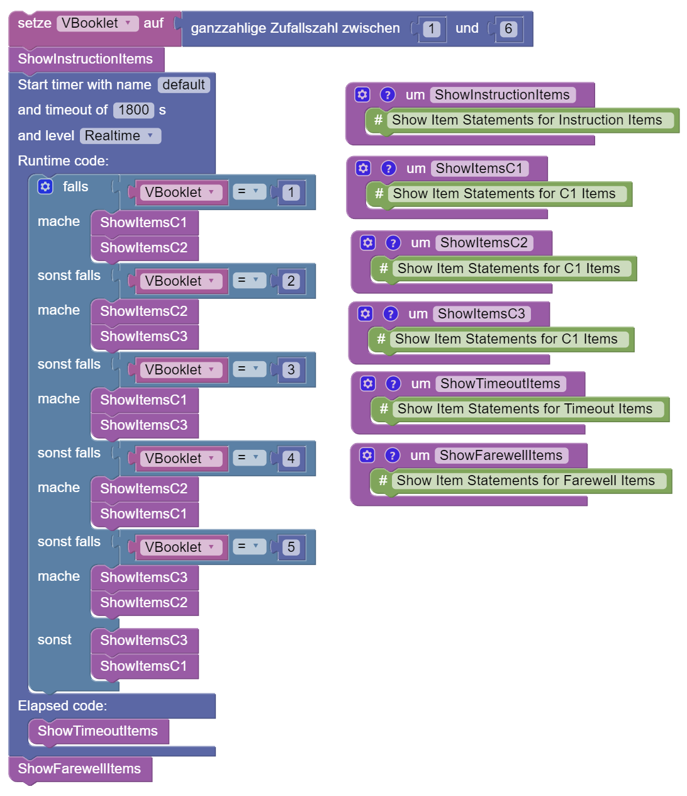
With back navigation, the functions can return lists of tasks:

For more information see here.
5.8.1.2 Notes on using the Blockly editor
Processes are defined in the visual Blockly editor. Execution begins with the element that is aligned furthest up. If necessary, the workspace can be automatically aligned using the tidy-up function. To add Blockly operators, they can be dragged and dropped from the palette.
Delete: Operators can be dragged to the recycle bin to delete them. Selected Blockly elements can also be deleted using the Delete(delete) button. Alternatively, selected Blockly elements can also be deleted via the context menu.
Redo/Undo: Individual actions can be undone within the Blockly editor. The key combination ‘Ctrl + Z’ can be used for this. Pressing ‘Ctrl + Y’ repeats an action. By clicking in an empty section of the Blockly editor, you can access a context menu which also contains the options for Undo and Redo:
- Save: Adjustments in the Blockly editor must be saved. The floppy disk symbol is available for this purpose at the bottom right:
If you want to discard the change (as a whole), you can use the discard icon at the bottom right.
Zoom: The view in the workspace can be enlarged with the icons + and reduced with -.
Context menu: Further options are available via the right mouse button (context menu) in the Blocky editor. To call up these functions, a secondary click (right mouse button) must be performed on a Blockly element:
- Copy duplicates the selected Blockly element, including all connected elements.
- Commenting on blocks is possible.
- Blocks can be deactivated/activated.
- Some block types allow you to change the display form external/internal.
- Blocks that contain further blocks can be folded/unfolded.
- The deletion of blocks is also possible via the context menu.
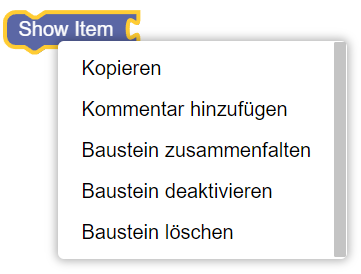
Some Blockly elements also provide a Help entry in the context menu, which refers to the generally accessible Blockly documents (https://github.com/google/blockly/wiki/).
5.8.2 Use of Blockly for flow control
The basic functions for using the Blockly environment to control assessments can be found in the Session section.
5.8.2.1 Show individual items
CBA ItemBuilder tasks that have been imported in the Items view for a survey section can be accessed in the flow control as shown in the examples above using the following Blockly element for Tasks:

The element, which can be found in the Session section of the Blockly editor palette, can be configured using the selection list. Each Blockly element for tasks can refer to exactly one specific task, i.e. a flow definition usually consists of several such elements.
Blockly elements for tasks cannot be inserted directly into the flow, but are used together with a Show Item element:
The example for simple test booklets illustrates that sequences in the Blockly definition are often defined by a sequence of several Show Item operators. Show Item operators can be inserted into conditions and loops, both within the main flow and within functions.
5.8.2.2 Use of scopes (scopes)
With the help of Blocky-based flow control, it is also possible to administer CBA ItemBuilder tasks multiple times within a flow:

When an item is called up again, the status from the last visit is restored, i.e. processing is continued. If items are to be resubmitted several times, i.e. unedited, automatic restoration may not be desired. The checkbox for specifying a Scope (scope) can be optionally activated for this purpose:

If nothing else is specified, the item is administered in the “default” scope. Alternatively, a text can be defined, as shown in the following example:
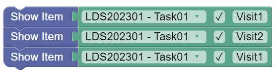
On the first visit, the task is displayed in the Scope “Visit1”. This is followed by a new, independent display of the task in a different scope (“Visit2”). In the third call, the task is not displayed with the data that was already collected during the first visit (i.e. the Scope “Visit1” is used again).
5.8.2.3 Display multiple items (item lists)
As can be seen in the example for linear sequence, linear tests can also be displayed using lists of tasks.
Lists can be used with the Blockly operator Show Items:

- Back navigation: The Show Items element for lists can be configured via the Can navigate back property. If this property is selected, CBA ItemBuilder-Tasks can request navigation to the previous CBA ItemBuilder Tasks with the Command
BACK_TASK.
Canceling lists: The use of lists also allows lists to be canceled. Lists can be canceled in two ways:
- The *Command* `CANCEL_TASK`, which can be used within CBA ItemBuilder Tasks, is called.
- The function *Cancel item list* is called up in the test administrator menu, which has been configured for the study and, if necessary, adapted using the *Blockly* operator <a href="#anchor-test-administrator-menu">Edit test administrator menu</a>.This cancels the administration of an item list and the processing of the Blockly process is continued after the Show Items block.
5.8.2.4 Display of items with storage of the results
The operators Show Item (for individual items) and Show Items (for item lists) are also available as operators for value assignments:
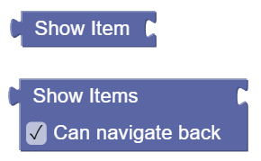
These can be used to assign item processing results to variables (string or array) and then evaluate them for process control.
- Single task:

- List of tasks:

5.8.2.5 Definition of time limits
As already illustrated in the example process with time restriction, the Blockly block Start time with name can be used to implement the time-restricted administration of items.
The Blockly element Start timer with name allows the definition of time limits. Each time limit can have its own name. In addition, the time must be specified in seconds. This can be used to define the type of time to be used:

- Realtime:
- Servertime:
- Sessiontime:
- Clienttime:
Finally, two places can be filled with further blockly operators (such as one or more Show Item blocks for displaying individual items or one or more Show Items blocks for displaying lists):
- Runtime code: These blocks are filled in until the defined time has elapsed.
- Elapsed code: These blocks are only filled in if the Runtime code has not been completed within the time.
5.8.2.6 Blockly operators for the test administrator menu
In the study definition, test administrator menu functions can be created for one or more roles. Roles combine different functions that can be differentiated using the password to be entered by the test administrator.
Customize standard functions: The following standard functions can be defined for a study in the Info / Test leader menu section:
- Navigation: Task forward / Task back
- Lists*: Cancel item list
- Exit*: End survey part and end session
- Volume control*: Adjust the audio volume during the assessment
During the processing of a survey part, the following Blockly operator can be used in the flow control to customize the test administrator menu for specific contexts:
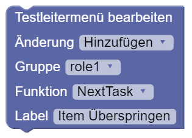
The test administrator menu can be changed for each of the standard functions (in the Function section) for a role (in the Group section) as well as the button label (in the Label section):
- Add: Function is added in the test leader menu
- Remove: Function is removed from the test conductor menu
- Deactivate*: Function is deactivated in the test conductor menu
- Activate*: Function is activated in the test conductor menu
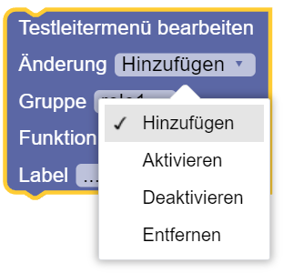
Calling this Blockly operator in the test sequence defines the behavior of the test administrator menu in the rest of the test sequence. In contrast to Remove, deactivated functions remain visible in the Test Manager menu, but cannot be executed (until they are activated again).
Using Blockly functions in the Test Manager menu: The Blockly operator for editing the test leader menu also contains the option to execute Blockly code (ExecuteBockly) in the Function section:

If ExecuteBlockly is selected, then a function defined within the Blockly editor can be selected in the Blockly element Edit test administrator menu. The Blockly operators defined in this function are then executed when a test leader selects the corresponding button in the test leader menu at runtime.
5.8.3 Advanced Blockly usage
5.8.3.1 Flow control with conditions
The Logic section contains the Blockly operator if/make, which can be used to implement conditions in the flow. Conditions are logical expressions, e.g. checking whether a preload variable has a certain value:

The blocky operators defined within the condition block (i.e. next to make) are only executed if the condition (if) is fulfilled. The example checks whether a Boolean variable has the value true.
The condition is defined as a separate block, which is connected to the blockly operator if/make. Here are the two components separately:
- Condition:
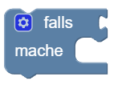
- Logical expression:

5.8.3.2 Use of logical expressions
Logical expressions in conditions are based either on value comparisons or returns from functions. Value comparisons can be realized with the following Blockly element:

The two slots can be filled with values. For Boolean values (true/false), a corresponding Blockly element is available in the Logic section:

Conditions are also possible with variables of a different data type:
For numerical values, there is a corresponding Blockly element in the Math section, which contains operators for numbers and simple mathematical operations:

With its help and a numeric variable, the following condition can be formulated:
For technical reasons, it may also be necessary to check whether a variable has no value at all. This can be implemented by using the blockly component null:

Combination of logical expressions: Individual conditions or logical expressions can be combined with the following Blockly element from the Logic section:
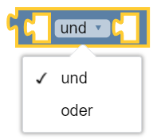
An and and an or linking of the statements is available for selection. The free inputs

Several logic expressions can be nested inside each other:

Note: For a clearer display, the external display is selected for the external and link.
Multiple conditions (if / else): By clicking on the small cogwheel symbol of a condition block (if/make), it can be configured:
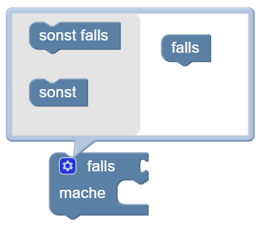
By adding an unless section, a further condition can be added. The condition defined in an if section is checked if the previous conditions (if) are not fulfilled. If a condition is fulfilled, the defined blockly operators are executed.
By adding an if section, blocks can be added which are executed if none of the conditions are met.
Special case: check operator for three conditions: For three conditions, the blockly editor provides a special check-if-true-if-false operator:

The operator combines two logical expressions, e.g:
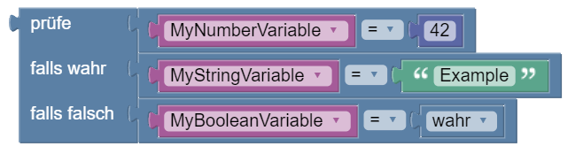
The construct is a short form for the following check, as shown in the following table:
| MyNumberVariable | MyStringVariable | MyBooleanVariable | Result |
|---|---|---|---|
| \(= 42\) | \(=\) Example | (any) | true |
| \(= 42\) | \(\neq\) Example | (any) | false |
| \(\neq 42\) | (any) | true | true |
| \(\neq 42\) | (any) | false | false |
Without the operator for three conditions, the same check could be implemented with the following combination:

Negation: The following blockly operator is available to reverse a logical expression (negation):

5.8.3.3 Sequence control with loops
The multiple execution of blockly operators (and the actions that can be displayed with them) is possible with loops. The Loops section of the Palette contains the Blockly elements required for this.
Repeat n times: The following Blockly operator can be used to repeat the execution of blocks n times:

Repeat as long as: Loops can also be repeated until a condition is true (or as long as a condition is true):
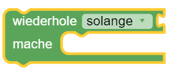
Example:

Count from/to: Loop with auxiliary variables:

For each value from list: Loop over all values in a list:

Abort loops prematurely: The following Blockly element can be used to cancel a loop (prematurely) or to start the next loop pass prematurely:

5.8.3.4 Operators for numbers and simple mathematical functions
The Math section of the Palette contains Blockly elements for using numbers and simple mathematical functions.
Expressions
- Numbers: Integers / decimal numbers
- Symbols: Special symbols or constants:

Basic functions
- Addition, subtraction, multiplication, division and power function of two arguments:
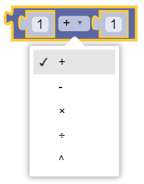
Nesting is possible, e.g:

- Division with remainder:

- Whether a number is even can be checked with this blockly element:
- With the following blockly element, a number can be limited to a section:

Built-in functions
- Trigonometric functions:
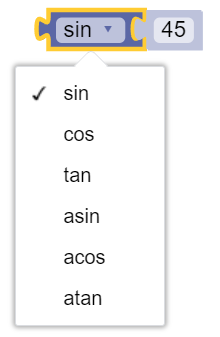
- Rounding of values:
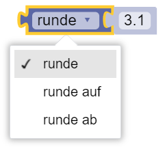
- Further functions:

Generation of random numbers: Two blocky elements are available for generating random numbers:
- Integers (in value range):

- Random number between \(0\) and \(1\):
Numeric functions for lists: Predefined functions for lists include:

Notes:
If required, further functions can be implemented with loops for lists.
When using the functions, make sure that the selected function can be used for the data types of the list.
5.8.3.5 Operators for text and simple string operations
The Text section of the Palette contains Blockly elements for using strings.
Expressions: The following operator is available for creating text:
Chains: Various operators can be used to join text and assign it to variables:
- Append a text to a variable:

- Concatenate texts (and variable values) and pass them on to other blockly operators:

- Assign a variable to merged texts:
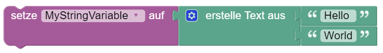
Text length: The length of a character string can be determined using the following blockly operator:
Check for empty string: Empty string variables can be recognized by the fact that the number of characters is \(0\).

Alternatively, the following blockly operator can be used:

Find position in string: An operator that searches in text (passed by variable or as an expression) for the first or last occurrence of a term can be used as follows:

The position of the term within the character string (i.e. in the text) is returned.
Form sub-strings: The following operator takes the first letters from the passed string in text. The number of letters is also passed.
- Example (here, if the option take first is selected, the variable
MyStringVariableis assigned the textABC, i.e. the first three letters of the character stringABCDEFG):

Letters from a character string can also be extracted using the following operator and assigned to a variable, for example:
- Example (here, for example, characters 3 to 5 can be taken from a character string):

Change texts: Existing texts (either as expressions or from variables of datatype string) can be modified by applying operators.
- The following operator can be used to convert text to uppercase or lowercase:
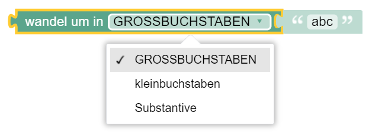
- Leading, trailing or leading and trailing spaces can be removed using the following operator:

5.8.3.6 Operators for times and simple time operations
The Date & Time section of the Palette contains Blockly elements for using times within flow definitions.
Fixing points in time: Variables of the datatype DateTime can be assigned timestamps.
Determine time differences: Complete example: The following Blockly code measures the time for processing tasks 1 to 4. To do this, the start time is first recorded, and after the tasks have been processed, the time difference is determined and converted into seconds:
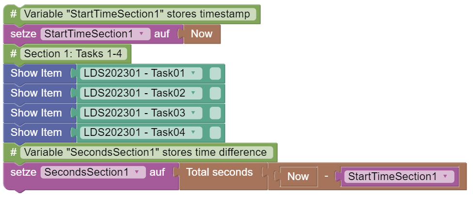
Conversion of time measures
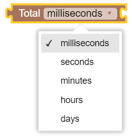
5.8.3.7 Operators for lists
The lists section of the palette contains blockly elements for creating and using lists.
Create list: Various options are available for creating lists.
- Lists can be created from the following elements:

The number of elements of the create list with operator can be configured using drag-and-drop after clicking on the cogwheel icon:
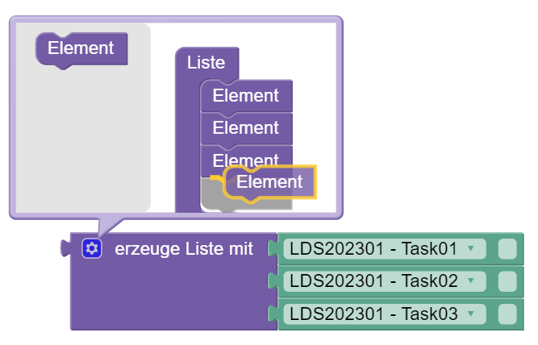
- List can be created by repeating an element:
Combining lists: Existing lists can be merged with the following operator:
Sublists: A sublist can be selected from lists using the following operator:

Further operator options for to: to from last and to last.
List properties: The following operators are available to query properties of a list:
- The following operator returns true if the linked list is empty:
- The following operator returns the length of the list:

- The following operator returns the distinct elements of a list

Search and replace: The following operators are available for searching and replacing elements in lists:
- The following operator finds elements in lists:

- The following operator returns / removes or replaces in a list and returns the ELement:

Further options of the operator for that: from behind that / first / last and random.
- The following operator replaces under inserts in a list:
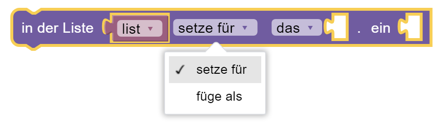
Further options of the operator for that: from behind that / first / last and random.
Conversion of lists and text: List and text can be converted using separators.
- The following operator creates a text from a list or a list from a text:
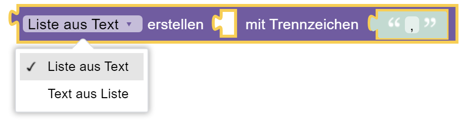
Sort lists: Elements in lists can also be sorted.
- The following operator returns the distinct elements of a list:

5.8.3.8 Blockly variables
The Variables section of the Palette contains Blockly elements for creating and using variables.
Create variable: To create a Blockly variable, the Palette contains the Create typed variable:
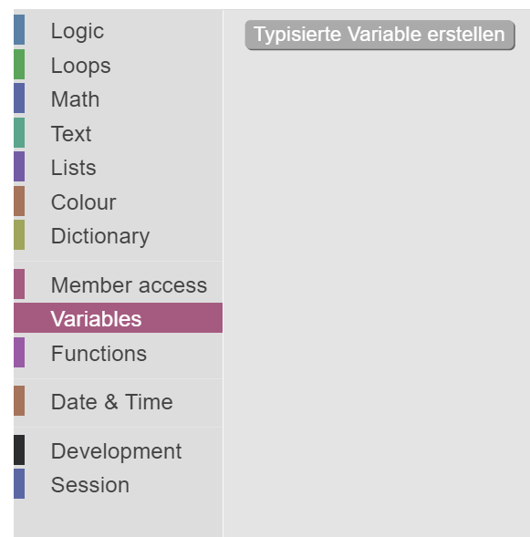
- Blockly variables always have a variable name and data type:
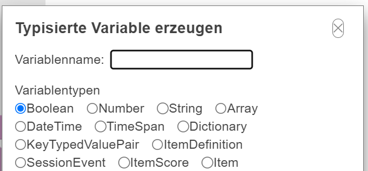
Simple data types and value assignments: The following basal data types are supported:
- Boolean: Logical truth values and logical expressions (
trueorfalse)

- Number: Data type for numerical values (with and without decimal place)

- String: Text values or character strings
The following data types are provided for times:
- DateTime: Date and time

- TimeSpan: time span

Data types for multiple values: In addition to the basal data types, data types for multiple values are also supported:
- Array: Data type for lists

Dictionary: (documentation missing)
KeyTypedValuePairs: (documentation missing)
Use variable values: To use variable values, Blockly elements with inputs can take the following component:

- You can select which variable is used. For defned variables, there is also a Blockly element in the Variables section of the Palette:
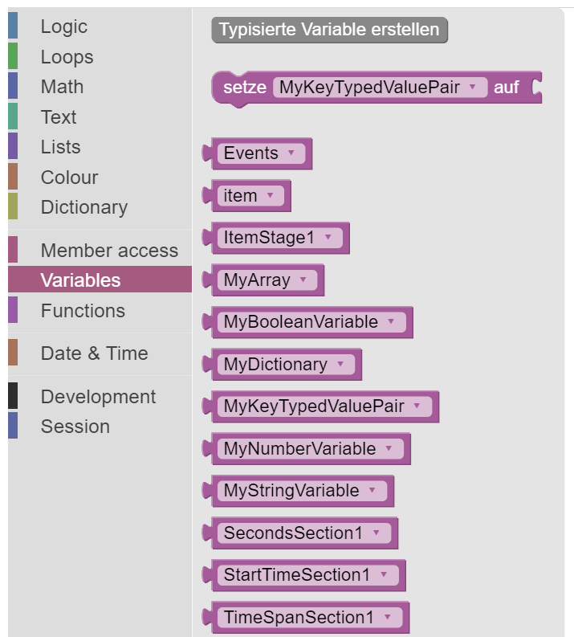
- The palette also contains a blockly element of the type set … on. This can also be used to select the value of which variable it sets:

5.8.3.9 Blockly functions
The Functions section of the Palette contains Blockly elements for using functions within flow definitions. Functions combine blocky code so that it can only be defined once but used multiple times.
Defining functions: Two different forms of functions can be defined.
- Functions without a return value:

To be called, functions without a return value can simply be connected to previous and subsequent blockly elements in the sequence (i.e. they have an up and down connection):

- Functions with return value:

Functions with a return value can be called in an assignment block (i.e. they have a connection to the left):
The type to which an assignment makes sense depends on the type of the return value.
Defining return values of functions: Functions are defined by special blockly elements that can be inserted anywhere in the code editor.
Return values can be defined for functions with a return value. The return value can be added directly to the function definition next to gib zurück:

In addition, the following two blockly elements are available, which can only be used within a function definition (with return value):
- The operator return allows a value to be returned. After this, no further blockly elements can be placed in the flow within the function (i.e. the gib zurück operator has no downward connection):

- The if return operator only returns a value if a condition is met. If the condition is fulfilled, the processing of the sequence in the function ends; if the condition is not fulfilled, processing continues (i.e. the if return operator has a downward connection):

- The if-return operator is therefore identical to the following combination of operators:

- Both operators (if returns and return) cannot be used outside of functions:
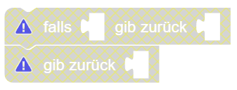
- The two operators (if returns and return) can be used within functions without a return value to terminate the execution of functions (but not to return values):
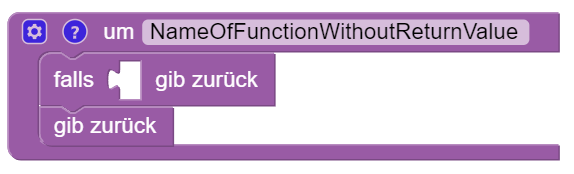
Example:
- The following function returns the value of the variable
MyStringVariable(Any value 1) in 50% of the cases (i.e. if a first drawn random variable is greater than \(0.5\)). In the other 50% of cases, another random variable is drawn, and if this is greater than \(0.5\), then the text Any value 2 is returned. If this is not the case either, the text Default is returned:
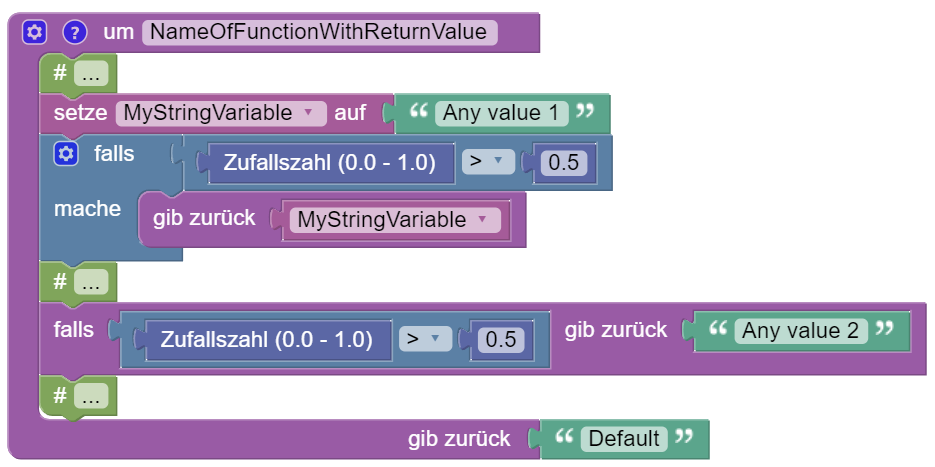
Return values are typed. The flow control also supports functions that …
- … return individual tasks:

- … Return lists of tasks:

Defining call parameters of functions: Functions can also use parameters that are to be passed when the function is called (call parameters). Call parameters can be defined by clicking on the small cogwheel symbol of a function block:

The function is then called by passing it in accordance with the parameter definition:
- Definition of a parameter
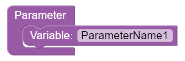
- Call the function with value:

Example:
- The following example shows a function with two parameters, their use within the function using the example of conditions and the call of the function with fixed values:

- Alternatively, the function can of course also be called with variables:
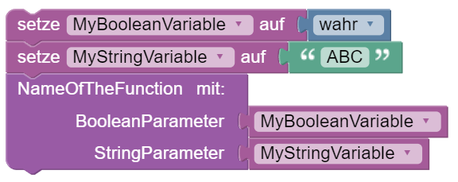
5.8.3.10 Use of item results in the flow control
(documentation)
5.8.3.11 Blockly operators for encoding missing values
(documentation follows)
5.8.3.12 Blockly operators for writing data
(documentation follows)
Log data: The following operator can be used to store information directly in the log data:

Result data: (documentation follows)
Monitoring data: (documentation follows)
5.8.4 Commenting on Blockly code
The IRTLib Editor supports two different options for commenting blockly code.
5.8.4.2 Detailed comments on Blockly elements
For more detailed comments, each block can be added with a comment (and deleted if available) via the context menu:

These comments can comprise several lines and are displayed when the small ?-icon of a block is clicked.

5.8.5 Presentation of Blockly code
5.8.5.1 Unfolding / folding
Large and complex processes can sometimes become confusing in the Blockly editor. In order to hide blockly elements that are not required for viewing without changing the function of the flow definition, blocks can be folded together:
This is illustrated in the following example:
- Unfolded (i.e. complete) display of the selected block:

- Option to fold the block in the context menu:
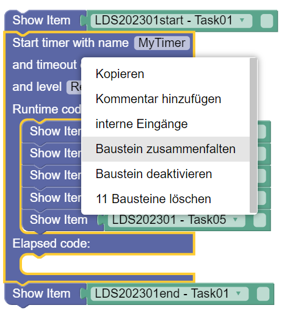
- Collapsed representation of the block within the flow definition:
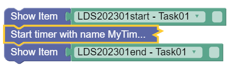
- Option to unfold the block in the context menu:
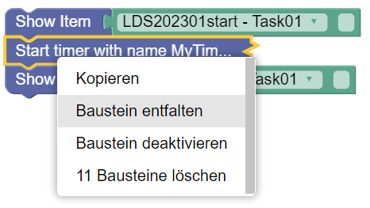
The folding / unfolding of blockly elements does not change the function of a flow definition and is only used for a clearer arrangement of complex flow definitions.
5.8.5.2 Deactivating / activating
The Blockly editor offers the option of only deactivating Blockly elements instead of deleting them. Deactivated Blockly elements remain in the flow definition but are not executed.
In the following example, the block for displaying task 3 is deactivated, i.e. only task 1, 2 and 4 are displayed:
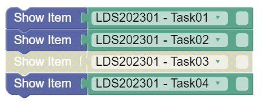
Activating or deactivating Blockly elements is done via the context menu:

Internal / External: Some blockly elements with inputs (i.e. places where you can connect further blocks) allow you to switch between two display forms.
- Internal: The inputs are arranged within the blocks.

- Externally: The inputs are arranged on the side of the blocks.

Both display formats are equivalent in terms of functionality.
Clean up: The context menu of the Blockly editor, which can be opened by clicking in an empty section, contains the Clean up blocks function:

By calling Clean up blocks, all Blockly elements in the Blockly editor are aligned vertically one below the other.
5.9 Routing between survey parts
If several survey parts are defined for a study, the sequence of survey parts can be defined in which respondents or test persons are presented with the contents of the survey parts.
In addition to simple linear sequences, sequences of several survey parts can also be configured with blockly-based routing.
A detailed description of routing between survey parts can be found here in the embedded help:
5.9.1 Summary of routing between survey parts
The order of survey parts can be defined using Blockly (analogous to defining the order of Items within Survey parts). This option is available if the option Enable routing for survey parts is selected in the basic configuration for a study (in the Overview view).
For the general principles of using Blockly in the IRTlib Editor, see the help on Routing within survey parts.
Functions that are only available in Routing between survey parts are:
- Display survey part
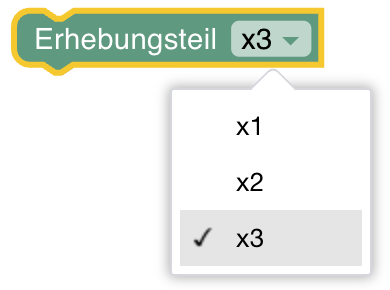
This Blockly operator replaces the Show Item within survey parts.
- Successful login
This Blockly operator has the value true if valid login information was specified before the number of maximum attempts (here: infinite, i.e. unlimited hoft).
Note: Changes to the Routing view between Collection parts must be saved using the diskette symbol or discarded using the undo symbol:

5.8.4.1 Comments as Blockly elements
Comments that are to be permanently visible in the flow can be added via the plaette in the Development section:
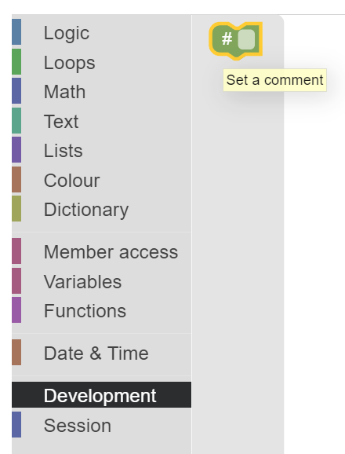
These comments can be moved like blocky operators and show one-line comment text.